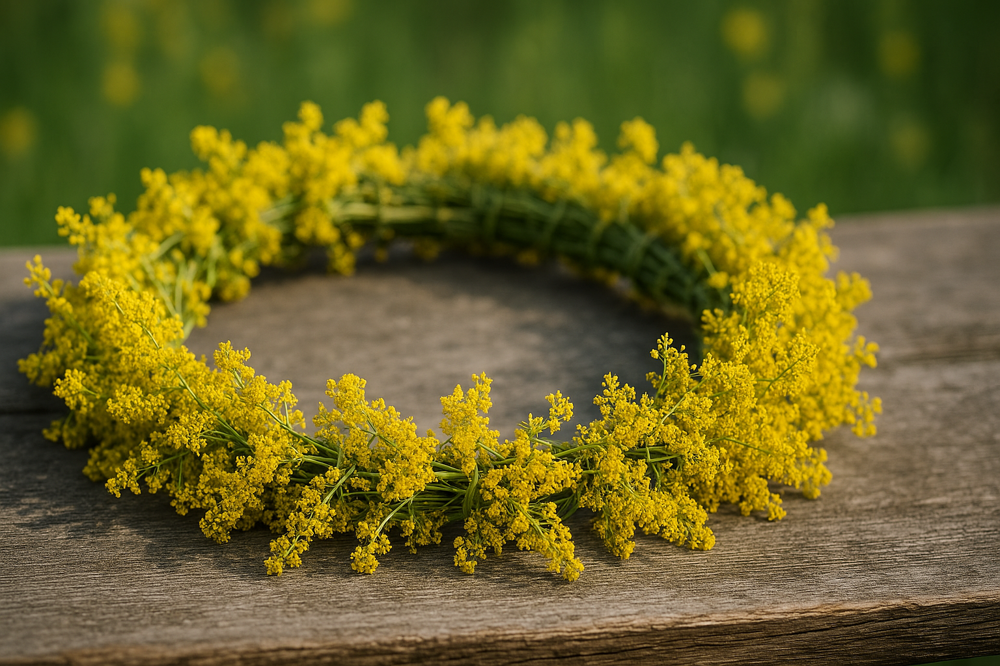

Sânzienele – Magia Nopții în Care Cerul Se Deschide

Introducere
În noaptea de 23 spre 24 iunie, când vara atinge apogeul, lumea românească intră într-o stare de vrajă. Este noaptea Sânzienelor, una dintre cele mai misterioase și mai frumoase sărbători din tradițiile noastre, în care natura pare că respiră altfel, iar oamenii – fie că sunt la sate sau la oraș – simt o neliniște dulce, ca și cum ceva nevăzut ar trece pe lângă ei.
Sânzienele sunt mai mult decât un eveniment calendaristic. Sunt un ritual ancestral, un ecou al unor timpuri în care oamenii trăiau în armonie cu pământul, iar magia se împletea firesc cu realitatea. Zâne luminoase, plante cu puteri tămăduitoare, horă fermecată, cer deschis și destin pecetluit – toate aceste elemente fac din Sânziene una dintre cele mai bogate și fascinante tradiții românești.
Originea unei sărbători vechi de mii de ani
Deși în prezent ziua de 24 iunie este asociată cu Nașterea Sfântului Ioan Botezătorul, rădăcinile Sânzienelor sunt mult mai vechi, mergând până în ritualurile solstițiului de vară din vremea dacilor. În acea perioadă, oamenii celebrau puterea Soarelui, considerând că aceasta era ziua când lumina învingea orice umbră.
În tradiția populară, Sânzienele sunt zâne ale luminii – blânde, grațioase, dar capricioase atunci când nu sunt respectate. Spre deosebire de iele, creaturi mai imprevizibile și uneori răzbunătoare, Sânzienele aduc rod, vindecare și armonie. Totuși, ele rămân ființe misterioase, despre care se spune că doar cei cu suflet curat le pot simți prezența.
Magia florilor de sânziană
Florile galbene de sânziană, delicate și parfumate, sunt simbolul acestei sărbători. Se spune că în noaptea magică ele capătă puteri nebănuite: vindecă, alungă răul, țin spiritele rele departe și pot revela viitorul. Fetele își culeg cununițe din aceste flori și le așază sub pernă, în speranța că își vor visa ursitul.
În multe sate românești, casele sunt împodobite cu flori de sânziană: la porți, la ferestre, în pod sau chiar pe acoperiș, pentru a proteja gospodăria de grindină, boli și necazuri. Era credință puternică în puterea acestor plante, iar gospodarul care uita să împodobească poarta era considerat neglijent față de darurile naturii.
Noaptea în care cerurile se deschid
Una dintre cele mai frumoase credințe spune că, în noaptea Sânzienelor, cerurile se deschid „de trei ori”, iar cei aleși pot vedea sau auzi lucruri din lumea nevăzută. Animalele capătă glas, păsările devin neliniștite, iar vântul poartă șoapte pe care doar bătrânii satului le pot descifra.
Se spune că sufletele celor plecați dintre noi se apropie de casele lor, veghează și aduc liniște. Sânzienele dansează în poieni, în hore fermecate pe care niciun om nu are voie să le privească. Cine îndrăznește să le spioneze riscă să fie amețit, rătăcit sau marcat pentru tot restul vieții.
Ritualuri și tradiții păstrate din bătrâni
De-a lungul secolelor, românii au păstrat numeroase obiceiuri de Sânziene. Unele sunt blânde și poetice, altele surprinzător de vechi și simbolice:
- Aruncatul cununilor pe acoperiș – dacă rămân, fata se mărită curând; dacă cad, nunta mai așteaptă.
- Împletirea cozilor de sânziene – pentru fete și femei, ca simbol al sănătății și frumuseții.
- Focurile de Sânziene – în unele sate, tinerii aprind focuri pe dealuri pentru a alunga spiritele rele.
- Băile rituale în rouă – considerate vindecătoare și binecuvântate.
- Așezarea florilor la porți și ferestre – pentru protecție tot anul.
Uneori, întreaga comunitate se mobiliza. Cetele de fete – numite Drăgaice – colindau satele cu dansuri ritualice pentru a aduce rod holdelor și belșug caselor. Era un spectacol aparte, încărcat de simboluri.
Semnificația spirituală a Sânzienelor
Dincolo de tradiții, Sânzienele sunt o metaforă a legăturii dintre oameni și natură. Sunt sărbătoarea luminii, a echilibrului și a renașterii sufletești. Ele marchează mijlocul verii – momentul în care natura este la apogeu, iar energia ei este transmisă celor care o respectă.
Etnografii spun că Sânzienele reprezintă armonia dintre lumea văzută și cea nevăzută. Nu sunt spirite rele, ci gardieni ai luminii, protectori ai câmpurilor și ai oamenilor care muncesc pământul. Este o sărbătoare a echilibrului interior și a curățării sufletești.
Sânzienele în lumea modernă
Deși multe tradiții s-au pierdut, magia Sânzienelor nu a dispărut. Astăzi, ele sunt celebrate în festivaluri culturale, în serbări ale satului, în ateliere de artă sau în evenimente moderne care readuc în atenție tradițiile românești.
Mulți tineri își culeg încă flori de sânziană, iar cununițele au devenit simbol al verii, al feminității și al legăturii cu natura. În mediul urban, oamenii au început să redescopere farmecul acestei sărbători, transformând-o într-o ocazie de relaxare, reflecție și reîntoarcere la rădăcini.
Concluzie
Sânzienele rămân una dintre cele mai poetice și mai profunde tradiții românești. Ele vorbesc despre frumusețe, lumină, mister și legătura indestructibilă dintre oameni și natură. În fiecare an, în această noapte magică, pare că timpul se oprește pentru o clipă, iar lumea devine mai liniștită, mai blândă, mai apropiată de esența ei.
Sânzienele nu sunt doar o sărbătoare – sunt o amintire că lumina există în fiecare dintre noi și că trebuie protejată, la fel cum strămoșii noștri protejau florile delicate de sânziană.